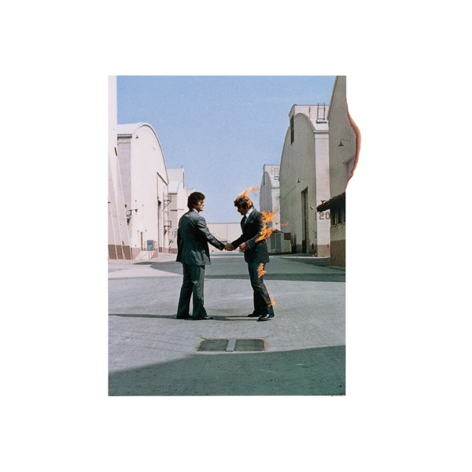

The Dark Side Of The Moon
Pink Floyd
- Original release
- 1973
- Pressing year
- 2023
- Country
- Worldwide
- Format
- Blu-ray Blu-ray Audio, Album, Reissue, Remastered, Stereo, Multichannel (Dolby Atmos)
- Label / Cat#
- Pink Floyd Records – PFR50BD3 / Pink Floyd Records – 19658813779
- Genres
- Rock
- Styles
- Prog Rock
- Discogs release
- 28614841
- Discogs master
- 10362
- Apple Music
- Wish You Were Here
- Wikipedia
- The Dark Side Of The Moon
Production notes
Tracklist (Discogs)
| 1 | Speak To Me | 1:08 |
| 2 | Breathe (In The Air) | 2:45 |
| 3 | On The Run | 3:34 |
| 4 | Time | 7:04 |
| 5 | The Great Gig In The Sky | 4:43 |
| 6 | Money | 6:17 |
| 7 | Us And Them | 7:47 |
| 8 | Any Colour You Like | 3:26 |
| 9 | Brain Damage | 3:51 |
| 10 | Eclipse | 2:24 |
Tracklist (Apple Music)
| 1 | Shine On You Crazy Diamond, Pts. 1-5 | 13:34 |
| 2 | Welcome to the Machine | 7:30 |
| 3 | Have a Cigar | 5:07 |
| 4 | Wish You Were Here | 5:38 |
| 5 | Shine On You Crazy Diamond, Pts. 6-9 | 12:25 |
Personnel & credits
- Tim Carroll — Authoring [Atmos File Format Encoding]
- Joel Plante — Authoring [Blu-ray Disc Authored By]
- Barry St. John — Backing Vocals
- Doris Troy — Backing Vocals
- Lesley Duncan — Backing Vocals
- Liza Strike — Backing Vocals
- Roger Waters — Bass Guitar, Vocals, Synthesizer [VCS3], Effects [Tape]
- Alan Parsons — Engineer [Abbey Road Studios]
- Joel Plante — Engineer [Assistant Engineer, 5.1 Surround And Dolby Atmos Mixes]
- Peter James — Engineer [Assistant, Abbey Road Studios]
- Richard Wright — Keyboards, Vocals, Synthesizer [VCS3]
- Roger Waters — Lyrics By
- Doug Sax — Mastered By [5.1 Mix]
- James Guthrie — Mastered By [5.1 Mix]
- Joel Plante — Mastered By [5.1 Mix]
- James Guthrie — Mastered By [Stereo And Atmos Mixes]
- Joel Plante — Mastered By [Stereo And Atmos Mixes]
- James Guthrie — Mixed By [5.1 Surround And Dolby Atmos Mixes]
- Chris Thomas — Mixed By [Mixing Supervised By, Abbey Road Studios]
- Nick Mason — Percussion, Effects [Tape]
- Pink Floyd — Producer
- David Gilmour — Vocals, Guitar [Guitars], Synth [VCS3]
Identifiers
- Barcode: 196588137792 (Scanned, sticker)
- Matrix / Runout: [One-Blue logo] PF-17 L0 2 01
- Mastering SID Code: IFPI L279
Notes
'The Dark Side Of The Moon Dolby Atmos': The title of this version, as appears on the spine, the disc label, rear cover and on the hype sticker as well
Barcode without numbers.
Dolby ATMOS Mix (Reads on BD Players as TrueHD 7.1)
5.1 Surround mix 24bit/96kHz PCM uncompressed / dts-HD MA
Remastered stereo mix 24-bit/192kHz uncompressed / dts-HD MA
- Die-Cut Digisleeve
- Postcard
- Stickerd set
- 24-Page Booklet
- Paper sleeve containing the disc
Marketed and distributed by Parlophone Records Ltd., a Warner Music Group company, for Europe and by Sony Entertainment for the world outside Europe.
Sleeve made in Italy, disc made in Japan.
Notes & discrepancies
- Track count differs: Discogs=10, Apple Music=5
- Total runtime differs by 75s (Discogs=2579s, Apple Music=2654s) — likely a different master/remaster.
- Release year differs: your pressing=2023, Apple Music edition=1975. Apple Music typically streams the most recent remaster.
The Dark Side of the Moon is Pink Floyd’s 1973 masterpiece and one of the most culturally significant albums in rock history. Released in March 1973, it became a phenomenon of unprecedented scale — the album spent a record-breaking 937 weeks on the Billboard 200 (a record that stood for decades), became the best-selling vinyl album of all time, and established Pink Floyd as stadium-scale artists with a distinctly conceptual, studio-centric approach to rock music. The album is a unified statement: a concept album without explicit narrative, held together by sonic coherence, thematic preoccupations with mortality, time, and human consciousness, and the band’s mastery of their instruments and the studio itself as a compositional tool.
The 2023 reissue was undertaken as part of a comprehensive 50th Anniversary campaign by Parlophone / Pink Floyd Records. The Blu-ray format presents the album in both audio-only Blu-ray Audio and Blu-ray disc configurations, allowing for high-resolution delivery of the stereo mix as well as a newly prepared Dolby Atmos immersive mix. This Atmos mix represents a contemporary reconceptualization of the stereo mix into a spatial field, sourced from the original multitrack session tapes. The remastering was undertaken using modern transfer equipment and the original analog masters, with attention to preserving the dynamic envelope and sonic character of the original 1973 release.
The 2023 Blu-ray audio edition — released for “the world outside of Europe” — reflects the global distribution strategy for this reissue campaign, with separate regional editions optimized for different markets. The Blu-ray format choice underscores the ambitions of this reissue: to present Dark Side of the Moon to contemporary listeners with maximum fidelity and immersive capability, ensuring that the album’s production values — which were state-of-the-art in 1973 and remain sophisticated by contemporary standards — are fully realized.
About this 2023 Worldwide pressing (Blu-ray Audio / Blu-ray): Parlophone / Pink Floyd Records, 2023 50th Anniversary reissue. Blu-ray Audio + Blu-ray disc with stereo mix and Dolby Atmos immersive mix. Remastered from the original analog masters. For world outside Europe.
Gemini Notes
Pink Floyd’s The Dark Side of the Moon is already a landmark of stereo production, but this standalone Blu-ray release elevates it into the spatial audio era. Featuring the 50th-anniversary Dolby Atmos mix created by longtime Floyd collaborator James Guthrie, the immersive audio format allows the album’s iconic sound effects—clocks, footsteps, heartbeats, and cash registers—to swirl around the listener in three-dimensional space, offering a completely new way to experience the 1973 masterpiece.